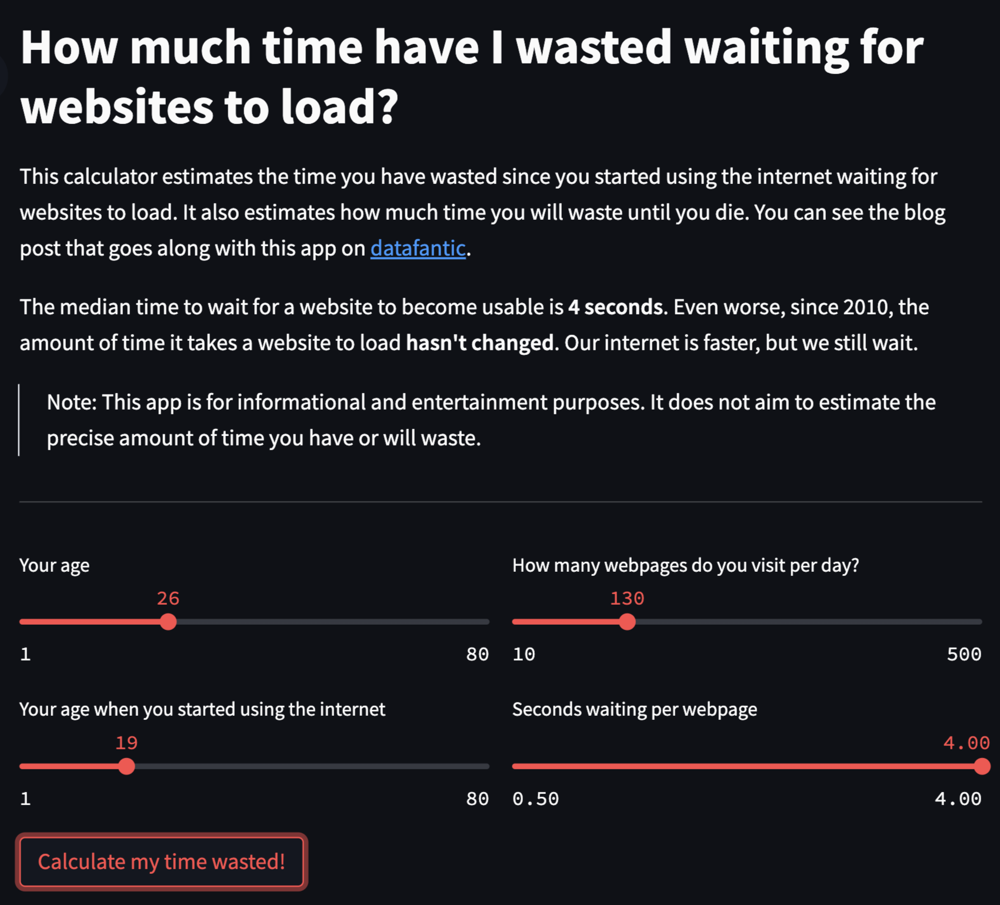
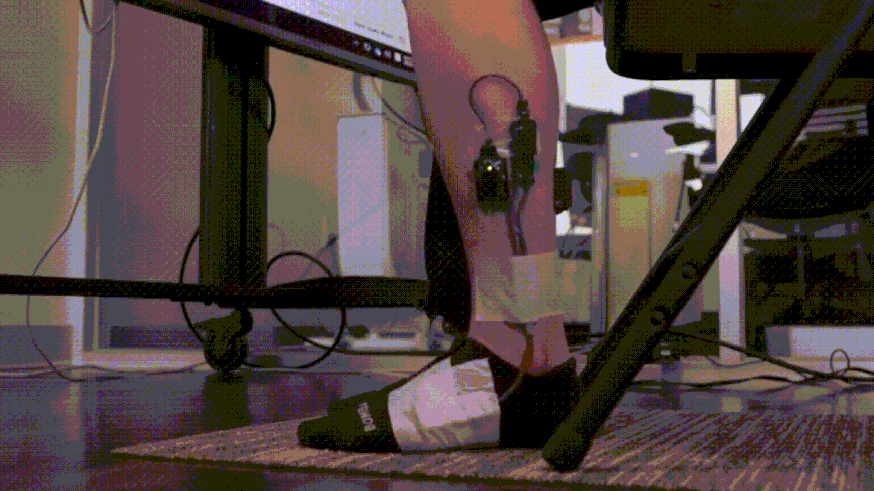
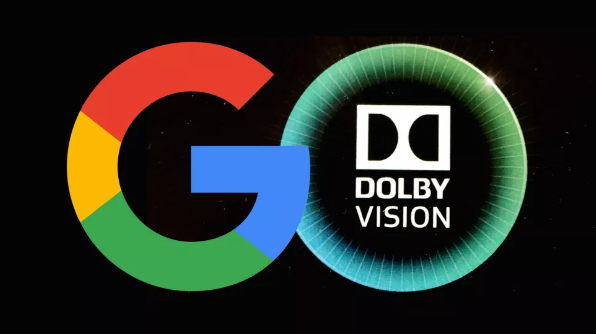
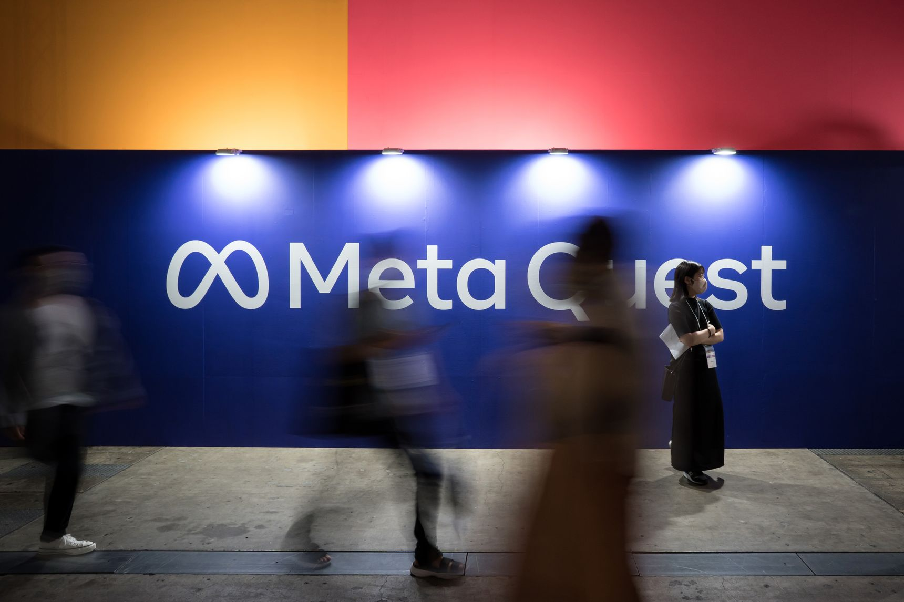
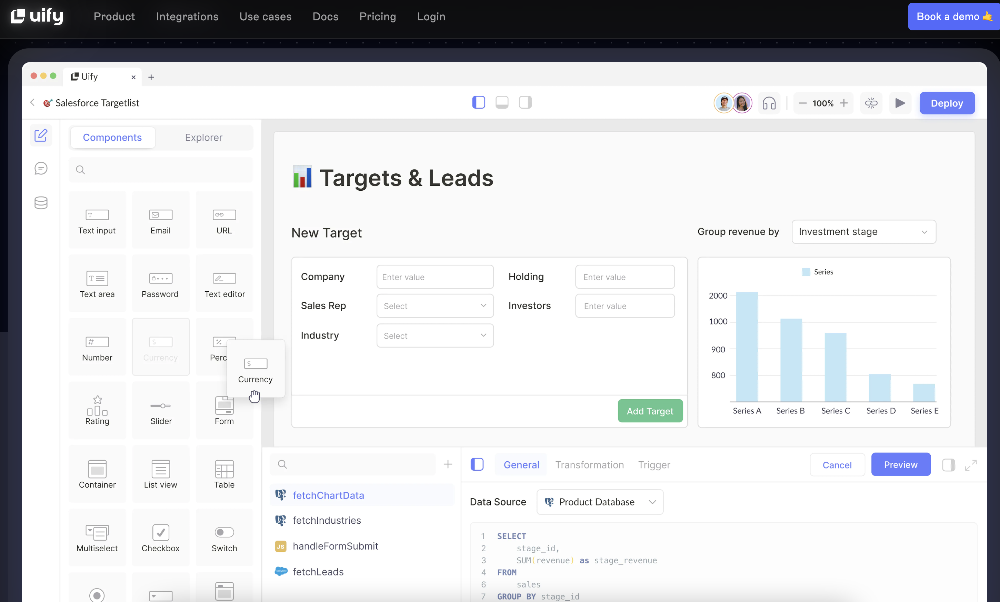
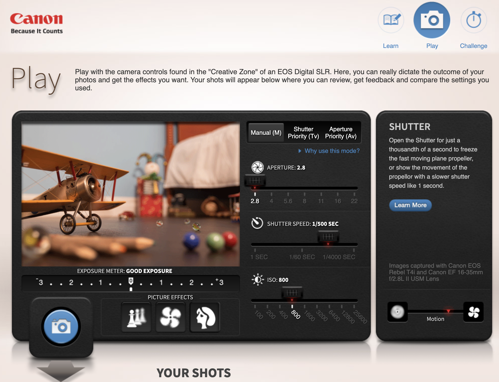
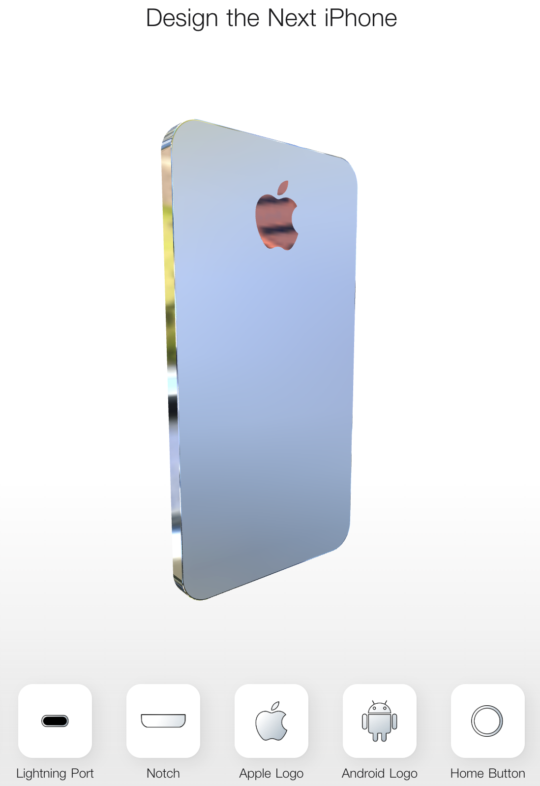
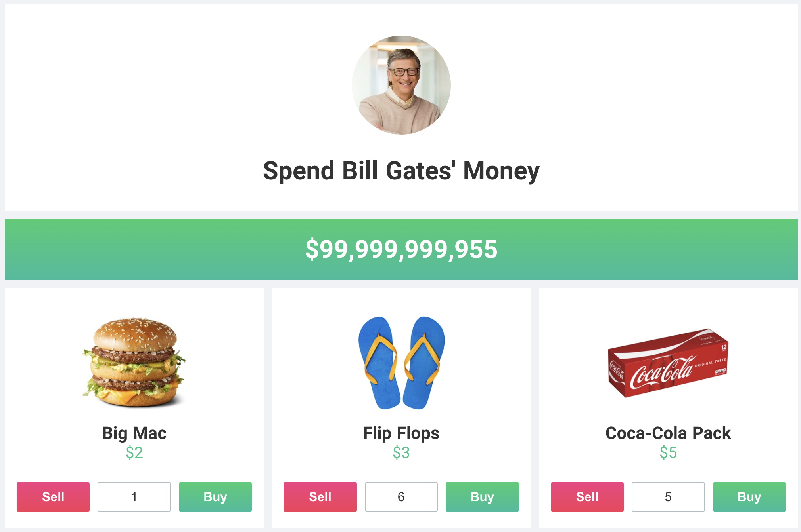
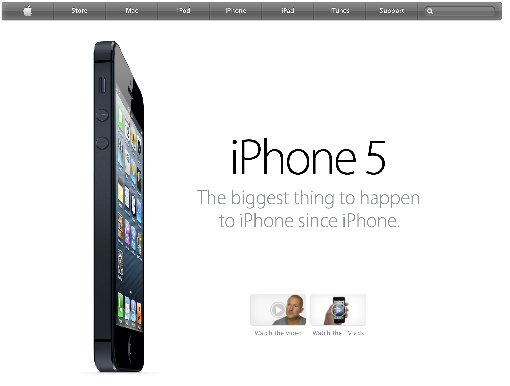
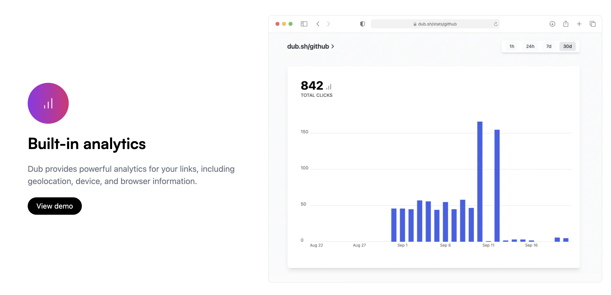

我们浪费了多少时间在等待网页加载上？
作者通过另外一篇博客了解到，我们的网页加载速度并没有比几年前更快，于是做了一些列的调研，结果就是确实如此，虽然之前有一篇关于电商的网站调研显示，网页加载速度慢 2 秒导致最终成单转化直接减少 87% 次，但人们似乎并没有因此而提高网页加载速度。
于是，我们就会问了，网页加载速度真的重要嘛？很有意思的一点是，如果网页加载速度很快，人们不会有什么感知，但如果网页加载速度很慢，人们可能就会怨声载道，但加载速度慢，其实是一个综合的因素，用户其实并不能明显感知到加载速度慢，究竟是家里的宽带有问题，还是对方服务器慢造成的。
但一个显然的结论是，网页加载速度慢，确实浪费了我们的生命。最后作者做了一个简单的交互式网页，显性的显示了，网页加载速度慢，究竟会浪费我们多长时间。

简单报
比目鱼肌俯卧撑

休斯顿大学 Marc Hamilton 教授今日在研究中发现，位于小腿后侧，从膝盖处一直延伸至脚后跟的比目鱼肌，虽然它只占体重的约 1%，但如果你能恰当地激活它，那么你的代谢率会得到显著提升。他们将这种运动命名为比目鱼俯卧撑（SPU），整个过程，比目鱼肌小号的能源比较复杂，成为消耗的糖原占比，其他多来自血糖和脂肪，效率比传统的禁食减肥等，效率高出去不少。
谷歌希望通过新的开放媒体格式挑战杜比

据 protocol 报道，谷歌正在尝试推出两种新的媒体格式，以打破杜比全景和杜比视界行业垄断的地位。谷歌正在进行的计划名为 Project Cavia，计划通过利用现有编解码器的 3D 音频和 HDR 视频格式，创造出更丰富和身临其境的媒体播放体验，就像杜比全景声和杜比视界一样。一旦这项计划真的落实，可能就会有海量的的消费级杜比产品的问世。当然，名字不一定叫杜比了，总是是相当利好消费者的。
Meta 和 Google 悄悄裁员

据华尔街日报报道，Facebook 母公司 Meta 近期开始”降本增效“，无独有偶，另一边的 google 也在要求部分员工重新找工作，Meta 内部有一个 30 天名单，上榜的员工被要求在 30 天内申请内部其他岗位，否则就需要卷铺盖走人，比国内这种保安拦着你不让你上去简直良心太多了。而谷歌也在用类似的方式减员，谷歌创业孵化器 Area120 的一般员工，被要求在 90 天内找到其他工作。
新玩意
uify 协作集成系统

通过组件化的方式，链接各个平台的数据，实现全域数据互通互联。以可视化的方式进行应用搭建，好处在于没有编程基础的同学，也可以快速上手了。未来这种工具应该越来越多，可以想见，接下来低代码是大势所趋。
佳能曝光模拟工具

视频限时不断转动扇叶的飞机模型玩具，用户可以手动选择快门速度、ISO 和光圈的值以达到快速理解三者关系的目的。这个值对其他相机一样适用，对于初入门摄影的小伙伴，一定要试一试。
neal fun 好玩的网站
作者做了很多个好玩的网站，比如设计你的下一个 iPhone、花比尔盖茨的钱、10 年前一些著名网站的样子，还有很多好玩有趣的项目，大家可以自行上网站上查看。



dub 短链追踪工具

dub 是一个开源的短链生成器，内置了分析功能和免费的自定义域名。